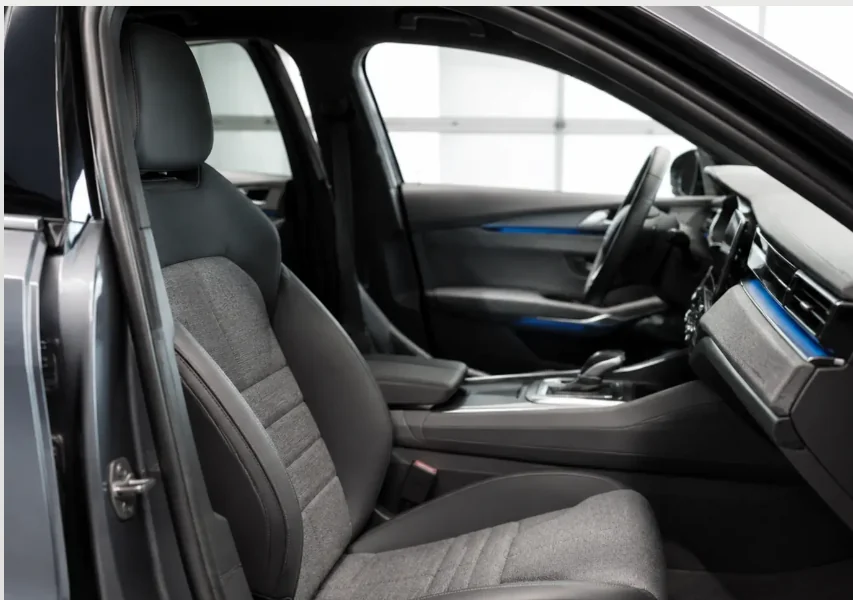
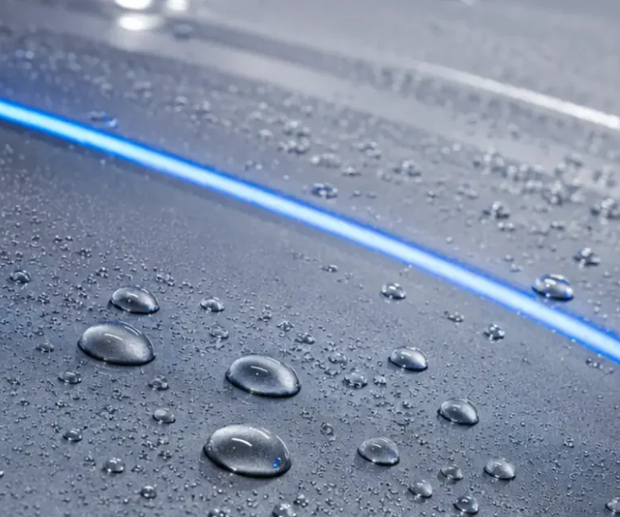

Il risultato cambia con la luce
NO FILTER.
Solo superficie.
Il risultato non è un filtro fotografico. È il modo in cui tessuti, plastiche e vernice reagiscono quando la luce torna a scorrere senza distrazioni.


NON CERCHIAMO
l’effetto wow.
Cerchiamo un risultato leggibile. Interni che sembrano puliti perché lo sono. Vernice più uniforme sotto luce diretta. Acqua che si comporta in modo coerente su una superficie protetta.
Fotografie, ma senza trucchi.
Per una realtà vera, questa pagina sarebbe alimentata da prima/dopo reali, con condizioni di luce dichiarate e nessun ritocco che alteri il risultato del trattamento.
Questa è una demo: le immagini hanno funzione dimostrativa e non rappresentano lavori di un’attività reale.
Vuoi capire cosa può cambiare sulla tua?
La diagnosi non promette miracoli: mette in relazione condizioni, obiettivo e percorso plausibile.
Diagnosi rapida↗